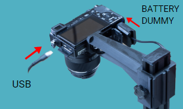
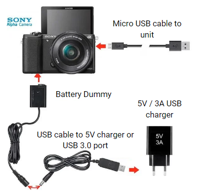
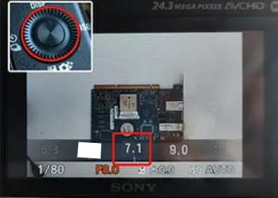
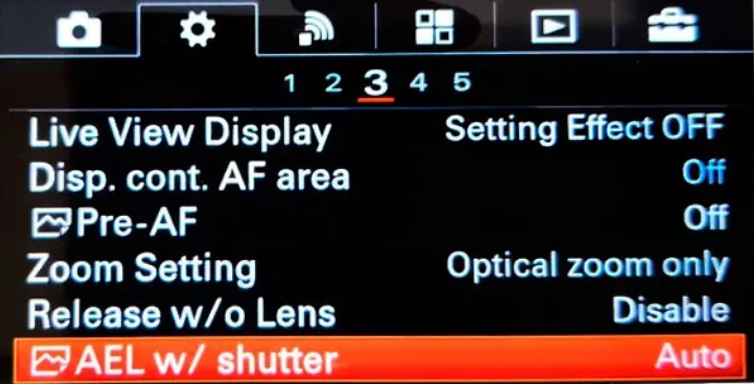
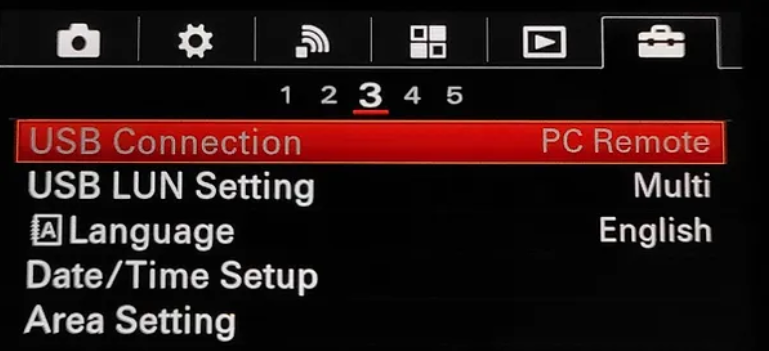
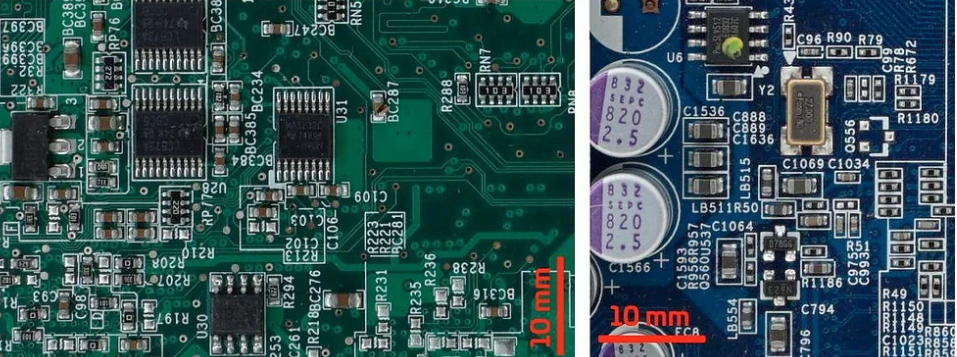
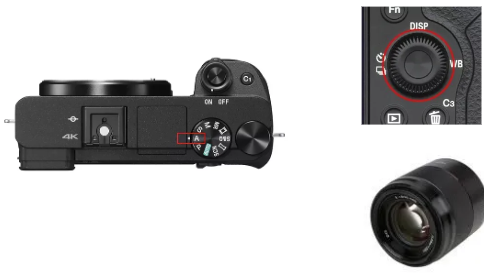

Connect the camera
First, be sure to connect the USB and battery dummy to the camera as shown in the picture.


SONY Camera
You got the SONY camera with the 50 mm 1.8f fixed lens already pre-configured but, if accidentally, its photo settings change you will need to set them again as below:
- Set the mode dial to A (Aperture Priority) pressing the round button and selecting the A mode.
2) Select the value F7.1 by turning the control dial (right image). Setting the aperture to 7.1 will let you get the most detailed photos of your PBCAs
3) Pressing the MENU button, go to setting and set the AEL w/shutter to ON
4) inside the same MENU, the last tab has an option called USB connection. Set it to PC REMOTE.
  
important
All the PCB to be inspected have to be perfectly leveled. If the panel/circuit has a certain tilt angle, not all the elements shapes will be perfectly defined limiting the software recognition capacities.
To capture the whole dimension of the panel / circuit you are inspected, move the camera UP in the mast. For smaller circuits/ panel, move it down but never use digital zoom.
important
Do not use the DIGITAL ZOOM with the 50mm optics system. It will only artificially increase the size of the digital image not adding real info to the photograph.
If you change any parameter or adjust the camera while the system is ON, the camera will get unresponsive. You will need to disconnect it from the laptop and reconnect it again.

If everything is fine, you will get highly detailed photographs of your PCBa. Above, example of two photos taken with the inspection platform. No shadows cast nor direct light reflections are present.
Using the 50MM FE 1.8 LENS
In the case you have changed, accidentally, the default camera´s configuration, follow these steps: 1) Set the mode dial to A (Aperture Priority) 2) Select the value F7.1 by turning the control dial (see image).

Note
Do not use DIGITAL ZOOM with the 50mm optics system. It will only artificially increase the size of the digital image not adding real info to the photograph. If everything is fine, you will get highly detailed photographs of your PCBAs.
If you want to know how to connect the specific version you are using you can see it in the following sections:
How to connect to the microcomputer